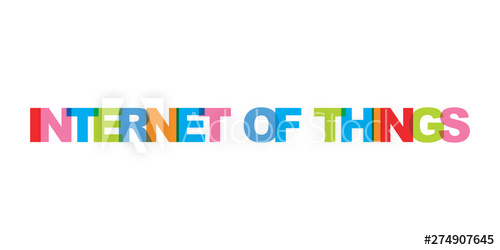

Sejarah
Mengingat bahwa IoT ini adalah teknologi canggih yang mampu melakukan transfer data lewat jaringan dengan interaksi yang mudah, masa depan dari pengembangannya jadi sangat menjanjikan. Kehidupan manusia sehari-harinya bisa dioptimalkan dan dipermudah dengan sensor cerdas dan peralatan pintar yang berbasis internet ini.
Awalnya, internet itu sendiri mulai terkenal di tahun 1989. Lalu pada tahun 1990, seorang peneliti bernama John Romkey membuat suatu perangkat yang kala itu tergolong canggih. Perangkatnya adalah pemanggang roti yang bisa dinyalakan atau juga dimatikan lewat internet.
Kemudian di tahun 1994, seseorang bernama Steve Mann menciptakan WearCam, dan pada tahun 1997-nya si Paul Saffo menjelaskan secara singkat mengenai penemuannya soal teknologi sensor dan masa depannya nanti. Barulah di tahun 1999 Kevin Ashton membuat konsep Internet of Things. Kevin ini adalah Direktur Auto IDCentre dari MIT.
Di tahun yang sama, yaitu 1999, ditemukan mesin yang sistemnya berbasis Radio Frequency Identification (RFID) secara global. Nah, penemuan inilah yang jadi awal kepopuleran dari konsep IoT. Orang-orang, terutama pakar teknologi jadi berlomba-lomba mengembangkan teknologinya sesuai konsep IoT.
Lalu, di tahun 2000, brand ternama LG mengumumkan rencananya untuk membuat dan merilis teknologi IoT yaitu lemari pintar. Lemari pintar ini mampu menentukan apakah ada stok makanan yang perlu diisi ulang dalam lemarinya.
Kemudian, di tahun 2003, FRID yang sebelumnya telah disebutkan, mulai ditempatkan pada posisi penting dalam masa pengembangan teknologi di Amerika, melalui Program Savi. Pada tahun yang sama pula, perusahaan ritel raksasa Walmart mulai menyebarkan RFID di semua cabang tokonya yang tersedia di berbagai belahan dunia.
IoT kembali terkenal di tahun 2005, yaitu pada saat media-media ternama semacam The Guardian dan Boston Globe mulai mengutip banyak sekali dari artikel ilmiah dan proses pengembangan IoT. Hingga tahun 2008, berbagai macam perusahaan setuju untuk meluncurkan IPSO untuk memasarkan penggunaan IP dalam jaringan bagi “Smart Object” yang juga bertujuan mengaktifkan IoT itu sendiri.
Definisi Internet Of Things

Perkembangan teknologi semakin pesat dari waktu ke waktu. Dulu, mungkin kita hanya bisa berimajinasi atau menonton film-film fiksi sains soal teknologi canggih. Kini, berbagai peralatan/mesin sudah dilengkapi dengan kecanggihan teknologi yang bisa memudahkan pekerjaan kita sehari-hari. Mulai dari mobil pintar (smart car) yang bisa jalan sendiri ke berbagai tujuan tanpa pengemudi manusia, hingga mesin pintar semacam Alexa yang bisa bersuara mengingatkan Anda untuk melakukan ini-itu sesuai jadwal. Seluruh teknologi terbaru ini adalah bagian dari Internet of Things.
Apa itu Internet of Things?
Internet of Things adalah suatu konsep dimana objek tertentu punya kemampuan untuk mentransfer data lewat jaringan tanpa memerlukan adanya interaksi dari manusia ke manusia ataupun dari manusia ke perangkat komputer.
Internet of Things leih sering disebut dengan singkatannya yaitu IoT. IoT ini sudah berkembang pesat mulai dari konvergensi teknologi nirkabel, micro-electromechanical systems (MEMS), dan juga Internet.
IoT ini juga kerap diidentifikasikan dengan RFID sebagai metode komunikasi. Walaupun begitu, IoT juga bisa mencakup teknologi-teknologi sensor lainnya, semacam teknologi nirkabel maupun kode QR yang sering kita temukan di sekitar kita.
Apa saja kemampuan dari IoT? Adapun kemampuannya bermacam-macam contohnya dalam berbagi data, menjadi remote control, dan masih banyak lagi yang lainnya. Sebenarnya fungsinya termasuk juga diterapkan ke benda yang ada di dunia nyata, di sekitar kita. Apa saja contohnya? Contohnya adalah untuk pengolahan bahan pangan, elektronik, dan berbagai mesin atau teknologi lainnya yang semuanya tersambung ke jaringan lokal maupun global lewat sensor yang tertanam dan selalu menyala aktif.
Jadi, sederhananya istilah Internet of Things ini mengacu pada mesin atau alat yang bisa diidentifikasikan sebagai representasi virtual dalam strukturnya yang berbasis Internet.
Cara Kerja Internet of Things

Cara Kerja Internet of Things itu seperti apa? Sebenarnya IoT bekerja dengan memanfaatkan suatu argumentasi pemrograman, dimana tiap-tiap perintah argumen tersebut bisa menghasilkan suatu interaksi antar mesin yang telah terhubung secara otomatis tanpa campur tangan manusia dan tanpa terbatas jarak berapapun jauhnya.
Jadi, Internet di sini menjadi penghubung antara kedua interaksi mesin tersebut. Lalu di mana campur tangan manusia? Manusia dalam IoT tugasnya hanyalah menjadi pengatur dan pengawas dari mesin-mesin yang bekerja secara langsung tersebut.
Adapun tantangan terbesar yang bisa menjadi hambatan dalam mengkonfigurasi IoT adalah bagaimana menyusun jaringan komunikasinya sendiri. Mengapa itu menjadi sulit dan problematik? Ini sebenarnya dikarenakan jaringannya sangatlah kompleks. Selain itu, IoT juga sesungguhnya sangat perlu suatu sistem keamanan yang cukup ketat. Disamping masalah tersebut, biaya pengembangan IoT yang mahal juga sering menjadi penyebab kegagalannya. Ujung-ujungnya, pembuatan dan pengembangannya bisa berakhir gagal produksi.
Unsur-unsur Pembentuk IoT

Ada beberapa unsur pembentuk IoT yang mendasar termasuk kecerdasan buatan, konektivitas, sensor, keterlibatan aktif serta pemakaian perangkat berukuran kecil. Berikut, kami akan menjelaskan masing-masing unsur pemberntuk tersebut dengan singkat:
Kecerdasan Buatan (Artificial Intelligence/AI) − IoT membuat hampir semua mesin yang ada menjadi “Smart”. Ini berarti IoT bisa meningkatkan segala aspek kehidupan kita dengan pengembangan teknologi yang didasarkan pada AI. Jadi, pengembangan teknologi yang ada dilakukan dengan pengumpulan data, algoritma kecerdasan buatan, dan jaringan yang tersedia. Sebenarnya ya contohnya bisa jadi mesin yang tergolong sederhana semacam meningkatkan/mengembangkan lemari es/kulkas Anda sehingga bisa mendeteksi jika stok susu dan sereal favorit Anda sudah hampir habis, bahkan bisa juga membuat pesanan ke supermarket secara otomatis jika stok mau habis. Penerapan kecerdasan buatan ini memang sangatlah menarik.
Konektivitas − Dalam IoT, ada kemungkinan untuk membuat/membuka jaringan baru, dan jaringan khusus IoT. Jadi, jaringan ini tak lagi terikat hanya dengan penyedia utamanya saja. Jaringannya tidak harus berskala besar dan mahal, bisa tersedia pada skala yang jauh lebih kecil dan lebih murah. IoT bisa menciptakan jaringan kecil tersebut di antara perangkat sistem.
Sensor − Sensor ini merupakan pembeda yang membuat IoT unik dibanding mesin canggih lainnya. Sensor ini mampu mendefinisikan instrumen, yang mengubah IoT dari jaringan standar dan cenderung pasif dalam perangkat, hingga menjadi suatu sistem aktif yang sanggup diintegrasikan ke dunia nyata sehari-hari kita.
Keterlibatan Aktif (Active Engagement) − Engangement yang sering diterapkan teknologi umumnya yang termasuk pasif. IoT ini mengenalkan paradigma yang baru bagi konten aktif, produk, maupun keterlibatan layanan.
Perangkat Berukuran Kecil − Perangkat, seperti yang diperkirakan para pakar teknologi, memang menjadi semakin kecil, makin murah, dan lebih kuat dari masa ke masa. IoT memanfaatkan perangkat-perangkat kecil yang dibuat khusus ini agar menghasilkan ketepatan, skalabilitas, dan fleksibilitas yang baik.
Macam-macam Bidang Penerapan IoT
Pertanian - Ada berbagai macam pengaplikasani IoT di sektor pertanian. Beberapa diantaranya seperti mengumpulkan data soal suhu, curah hujan, kelembaban, kecepatan angin, serangan hama, dan muatan tanah. Data-data tersebut bisa dipakai buat mengotomatisasi teknik pertanian. Kemudian, bisa juga dipakai untuk mengambil keputusan (decision making) berdasarkan informasi yang ada demi meningkatkan kualitas dan kuantitas, meminimalkan risiko dan limbah, serta mengurangi upaya yang diperlukan dalam mengelola tanaman. Sebagai contoh, petani sekarang sudah bisa memantau suhu dan kelembaban tanah dari jauh, dan bahkan menerapkan data yang diperoleh IoT untuk program pemupukan yang lebih presisi.
Enegeri - Sejumlah besar perangkat yang memakan energi (semacam switch, outlet listrik, lampu, televisi, dll.) kini sudah bisa terintegrasi dengan konektivitas internet. Lalu apa dampaknya? Integrasi itu memungkinkan mesin-mesin ataupun jaringan untuk berkomunikasi dalam menyeimbangkan pembangkitan listrik serta penggunaan energi yang lebih hemat maupun efektif. Perangkat ini juga bisa memungkinkan akses remote control dari pengguna, atau bisa juga manajemen dari satu pusat lewat interface yang berberbasis cloud. Selain itu, bisa juga mengaktifkan fungsi semacam penjadwalan (misalnya untuk menyalakan/mematikan mesin pemanas, mengendalikan oven, mengubah kondisi pencahayaan dari terang menjadi redup hingga ke gelap, dan lain sebagainya). Jadi dengan IoT di bidang ini, sistem bisa berkumpul dan bertindak berdasarkan informasi yang terkait dengan energi dan daya demi meningkatkan efisiensi produksi dan distribusi listrik.
Lingkungan - Aplikasi pemantauan lingkungan dari IOT biasanya pakai sensor dalam membantu terwujunya perlindungan lingkungan. Contohnya seperti apa? Penerapannya misalnya dengan memantau kualitas udara atau air, kondisi atmosfer atau tanah, bahkan juga bisa mencakup pemantauan teerhadap satwa liar dan habitatnya. Tak hanya itu sebenarnya. Bisa juga IoT ini dimanfaatkan dalam penanggulangan bencana semacam sistem peringatan dini Tsunami atau gempa bumi. Hal ini tentunya bisa sangat membantu. Perangkat IoT dalam hal ini berarti punya jangkauan geografis yang sangat luas serta mampu bergerak.
Otomatisasi Rumah - Perangkat IoT juga bisa dipakai untuk memantau dan mengontrol sistem mekanis, elektrik, dan elektronik yang digunakan di berbagai jenis bangunan (misalnya, industri atau juga rumah Anda sebagai tempat tinggal). Alat atau pengembangan IoT ini juga bisa memantau penggunaan energi secara real-time untuk mengurangi konsumsi energi. Tak hanya itu, bahkan bisa juga melakukan pemantauan terhadap para penghuninya. Contohnya? Begitu Anda masuk ke rumah di malam hari, lampu menyala. Kemudian begitu Anda masuk ke jadwal tidur, lampu akan mati secara otomatis. Pagi hari, taman Anda akan disiram air oleh mesin penyiram otomatis. Begitu juga dengan kulkas Anda yang bisa memesan stok makanan sendiri ketika habis. Semuanya bisa terintegrasi menjadi sistem rumah pintar.
Medik dan Kesehatan - Dalam dunia medik dan kesehatan, IoT akan dikembangkan terus. Bahkan, nanti di masa yang akan datang, seluruh rekaman kesehatan Anda bisa ditransfer langsung ke tenaga medis maupun Rumah Sakit. Data-data yang bisa dideteksi dan dikirimkan semacam detak jantung, tingkat gula dalam darah, dan lain sebagainya. Smartphone/ponsel pribadi Anda akan jadi alat pemantau kesehatan yang canggih dan tentunya bisa sangat membantu Anda. Perangkat IoT yang ada bahkan bisa memberikan peringatan saat kesehatan Anda menurun atau memberikan saran pengobatan dan bahkan membuat janji temu dengan dokter. Sebenarnya beberapa teknologi canggih IoT telah dikembangkan dan diterapkan di bidang ini. Contohnya, tempat tidur pintar yang bisa otomatis memberitahukan dokter/perawat ketika pasien hendak bangun dari tempat tidur dll. Menurut laporan dari Goldman Sachs di tahun 2015, perangkat kesehatan semacam ini bisa menyelamatkan negara dari anggaran kesehatan yang berlebihan.
Transportasi - IoT bisa membantu manusia dalam integrasi komunikasi, kontrol, dan pemrosesan informasi pada berbagai sistem transportasi yang ada. Penerapan IoT memang terus-menerus meluas ke berbagai aspek sistem transportasi. Tak hanya teknologi mesinnya yaitu kendaraan, tetapi juga infrastruktur, serta menyinggung fungsi pengemudi/penggunanya. Interaksi dinamis yang terjadi antara komponen-komponen itu berasal dari sebuah sistem transportasi. Sistem tersebut memungkinkan komunikasi antar dan intra kendaraan, kontrol lalu lintas yang lebih efektif karena tergolong cerdas, parkir yang lebih cerdas, manajemen logistik dan armada, kontrol kendaraan, dan juga terkait faktor keselamatan maupun bantuan di jalan.
Referensi
Berikut ini adalah beberapa link dan file untuk membantu anda untuk lebih memahami tentang IoT :
- Sumber Artikel dari Website ini
- Memahami lebih dalam IoT
- Evolusi dari Internet Of Things, yang mengubah segalanya
- Internet of Things: Teknologi Konvergensi untuk Lingkungan Cerdas dan Ekosistem Terpadu